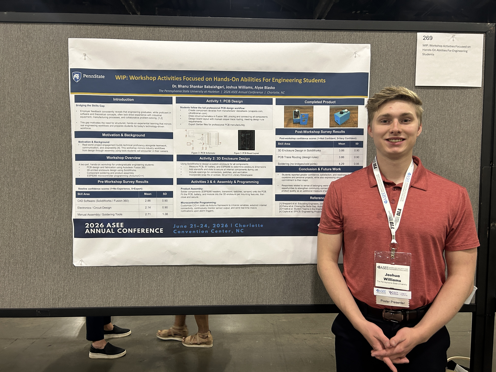
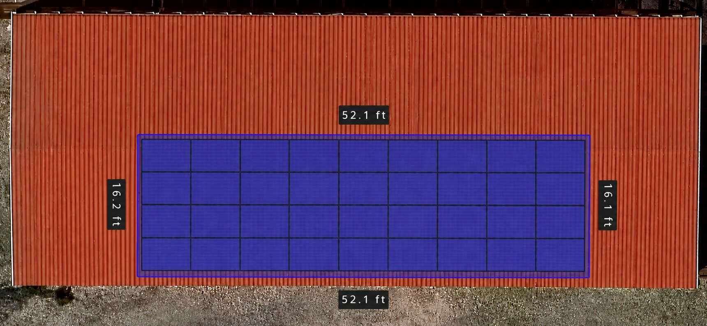
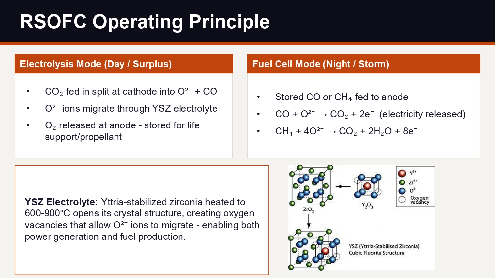
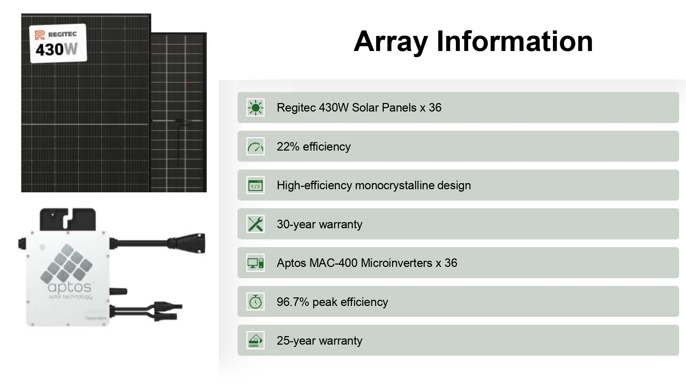
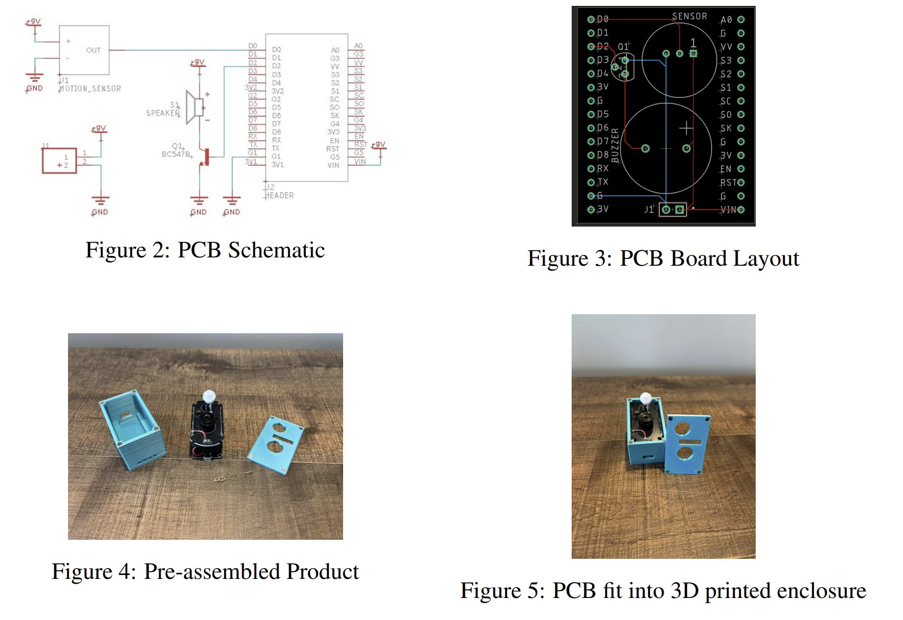

Joshua Williams
Alternative Energy & Power Generation Engineering Student
I build interdisciplinary engineering systems from concept to working hardware, combining mechanical and electrical design, CAD, embedded systems, robotics, fabrication, and real-world testing.

Background & Focus
I'm an undergraduate engineering student at Penn State University studying Alternative Energy and Power Generation, an interdisciplinary degree that spans mechanical, electrical, and power systems engineering. I hold a 3.50 GPA, I'm currently an Engineering Intern at Insteel Wire Products, and I serve as President of the Science and Engineering Club.
I'm seeking full-time engineering roles in aerospace, defense, renewable energy, or power systems starting Summer 2027. Long-term, my goal is to work on real hardware for space before eventually starting my own aerospace company.

Main Projects
Explore engineering projects I've designed, built, tested, and analyzed. Select a project to see the full write-up, engineering process, results, and technical documentation.
 Recon-1: An Autonomous AI-Powered Rover
An autonomous AI-powered rover with four-wheel independent drive and steering, a Raspberry Pi and ESP32 control stack, and a mostly 3D-printed structure using multiple materials depending on the part.
View Project →
Recon-1: An Autonomous AI-Powered Rover
An autonomous AI-powered rover with four-wheel independent drive and steering, a Raspberry Pi and ESP32 control stack, and a mostly 3D-printed structure using multiple materials depending on the part.
View Project →
 Bike Generator
A custom-frame, human-powered generator with a regulated 12V output and independently switched LED, fluorescent, and halogen loads, built to demonstrate how electrical demand drives rider effort.
View Project →
Bike Generator
A custom-frame, human-powered generator with a regulated 12V output and independently switched LED, fluorescent, and halogen loads, built to demonstrate how electrical demand drives rider effort.
View Project →

PCB Design & Fabrication Workshop A two-part hands-on workshop I helped develop and run with my professor, taking students from PCB schematic design through 3D-printed enclosures, assembly, and ESP8266 programming. View Project →Class Projects
Coursework from the Alternative Energy and Power Generation program at Penn State University.

Solar Design Project A class project sizing a complete residential solar system for an actual house, from energy needs and panel selection to inverter sizing and site orientation. Read more →
Reversible Solid Oxide Cells (RSOFC) A research project examining reversible solid oxide cells as a power and energy storage solution for a Mars mission, backed by a 10-page paper. Read more →Contact
I'm seeking full-time engineering roles in aerospace, defense, renewable energy, or power systems starting Summer 2027.
Single-Axis Solar Tracking System
Overview
North-facing rooftop panels lose a lot of their potential output because they're stuck at a fixed, non-optimal angle all day. I built a single-axis tracker to fix that: a 15W monocrystalline panel mounted on a custom, 3D-printed linear actuator that rotates it toward the sun and lays it flat again overnight. Tested against an identical fixed panel over three days, the tracker produced 17.5% more daily energy output.
My Role
This was a solo honors research project. I was responsible for all design, fabrication, programming, and testing, from initial concept through the final symposium presentation.
Engineering & Design Work
I designed the tracking mechanism in Fusion 360 and 3D printed a custom linear actuator to drive it, since off-the-shelf actuators for something this small were either too expensive or overkill. The actuator extends to rotate the panel toward solar noon and retracts to lay it flat overnight, and it barely uses any power to do it: about 6W at peak, running only 30–60 seconds a day, for a total draw of under 0.1 Wh per day. I also built in a "snow mode" that shakes the panel using the actuator to shed snow buildup, since a tracker that can't see the sun under snow isn't much use. I wrote the Arduino firmware that uses GPS coordinates and a real-time clock to calculate the sun's position and drive the actuator through its daily cycle.
Instrumentation & Testing
The test panel was a 15W monocrystalline module, 36 cells, 20.5% rated efficiency. Rather than assume the datasheet number, I characterized its actual maximum power point by sweeping the load across a 0–300Ω rheostat while logging voltage, current, and power in real time with an INA219 sensor, read out through an ESP8266 that hosted a live monitoring webpage. That test found a peak power point of 14.9W at 18.2V into a 22Ω load, close to the panel's rating.
For the tracker-vs-fixed comparison, I ran the tracking panel and an identical fixed panel side by side for three days, logging power continuously and integrating each day's power curve into total daily energy output.
Engineering Decisions & Tradeoffs
I chose a coordinate and real-time-clock based tracking approach over light-dependent resistor (LDR) sensors. LDR systems are simpler, but they produce noisy output under cloud cover and can't distinguish diffuse light from direct sunlight. The calculation-based approach trades a bit more firmware complexity for smoother, more predictable tracking.
3D-printed structural components let me iterate quickly and kept fabrication costs low for this first version. For a future outdoor deployment, I'd want to move the critical joints to machined aluminum for better weather resistance and long-term durability.
This project also showed me how tightly mechanical design, embedded control, and power systems are coupled in a real energy application: frame geometry drove the actuator torque requirements, which sized the power supply, which in turn shaped the enclosure design. Presenting the work at the symposium also reinforced how important it is to explain technical work clearly to both engineering and non-engineering audiences.
Results
Recon-1: An Autonomous AI-Powered Rover

Overview
Recon-1 is a four-wheel-drive autonomous ground vehicle designed from the ground up in Fusion 360, including the chassis, independent suspension, and steering knuckles. Most of the rover's structure is 3D printed, using different materials for different parts depending on what each component needs to do mechanically. The rover is currently in hardware testing. The electronics stack pairs a Raspberry Pi 4 with an ESP32, driving encoder-based motors through H-bridge drivers off a 3S LiPo power system.
My Role
I'm the Hardware Lead on Recon-1, responsible for the mechanical design (chassis, suspension, and steering) and the power and motor control electronics. I'm also building the data logging system that tracks encoder speed, motor response, and power usage during tests. A partner is developing the Python and OpenCV navigation stack that gives the rover its autonomous, AI-driven behavior.
Engineering & Design Work
- Custom chassis, independent suspension, and steering knuckles designed in Fusion 360
- Four-wheel independent drive and steering
- Structure built primarily from 3D-printed components, mixing materials by part to balance strength, weight, and flexibility where each is needed
- Raspberry Pi 4 and ESP32 control architecture
- Encoder-based motors driven through H-bridge motor controllers
- 3S LiPo power system
- Data logging for encoder speed, motor response, and power usage during tests
- Python and OpenCV-based autonomous navigation, developed in collaboration with a project partner
Documentation
The project is documented with full CAD and a bill of materials on GitHub.
Bike Generator


Overview
The Bike Generator is a pedal-powered demonstration platform built with the Science and Engineering Club for campus open house events. A 300W DC generator, driven by the bike, feeds a DC-DC buck-boost converter and then an inverter, powering a bank of switchable lights: 3 LED, 3 halogen, and 3 fluorescent. Visitors pedal and switch lights on and off, feeling in real time how adding more electrical load makes the pedaling harder.
My Role
As President of the Science and Engineering Club, I led the build: component selection, wiring, and testing, and guided the student team through assembling the frame and integrating the electrical system. I've also presented the project at open house events as a hands-on demo for prospective students.
System Design
We built a custom frame to hold the bike stationary and mount the generator, electronics, and light bank as one platform instead of a bike with parts strapped on. A 300W DC generator, driven by the pedaling motion, feeds a DC-DC buck-boost converter that holds a steady output regardless of pedaling speed, then an inverter that converts it to AC to run the light bank. The nine lights, 3 LED, 3 halogen, 3 fluorescent, are wired on independent switches, so we can bring on any combination and change the electrical load in real time.
Testing & Demonstration
At open houses, visitors pedal while we switch lights on and off, comparing the LED, halogen, and fluorescent banks individually or together, so they can feel the pedaling resistance change as electrical demand increases. It's a direct, physical way to show the link between electrical load and mechanical effort instead of just describing it. Getting there took some real engineering problems: keeping the buck-boost converter's output stable across a wide range of pedaling speeds, wiring three independently switched load banks without interference, and building a platform that could hold up to repeated public use.
What I Learned
This project made the connection between mechanical and electrical power feel real instead of theoretical: watching pedaling effort change the instant a load switches on is a better lesson in energy conversion than anything from a textbook. It also gave me hands-on experience with power electronics, particularly getting the buck-boost stage to hold a stable output under a changing load, and with integrating a mechanical build, generator, power electronics, and load bank into one system that had to actually work in front of the public.
Insteel Wire Products - Engineering Intern


Overview
I've been an Engineering Intern at Insteel Wire Products since May 2025, working full-time each summer and part-time during the school year. My core work has been failure analysis and CAD redesign of production components, but I've also proposed and helped build out the plant's additive manufacturing program, written a new quality control training guide, and completed a plant-wide drainage review and more - work that went beyond my original CAD assignments.
What This Role Has Taught Me
Splitting time between full-time summers and part-time semesters has meant working at very different paces on the same job. Summers gave me room to drive a project like the additive manufacturing program from proposal through to production hardware. The part-time school-year schedule pushed me to be more deliberate about which CAD requests and failure analyses actually needed my attention in a given week. Taking the AM program from a pitch to plant leadership through to three printers in daily use also taught me as much about explaining and justifying engineering decisions as it did about the CAD work itself.
Engineering Work
- Produced 100+ 2D technical drawings in AutoCAD
- Developed 75+ 3D CAD components in Fusion 360
- Conducted FMEA on manufacturing processes to identify failure modes and implement corrective actions
- Performed root cause analysis on production failures
- Revised SOPs and LOTO procedures (OSHA 1910.147) to standardize testing protocols, reduce operator error, and maintain safety compliance
Additive Manufacturing Program
I proposed and justified what became the plant's additive manufacturing program. When I started, there was no established 3D printing capability on the floor; the program has since grown to three printers in active use. I looked at which parts were good candidates to move from traditional manufacturing to 3D printing, weighing cost, lead time, and part availability against the tradeoffs of the process, and designed components specifically to take advantage of what additive manufacturing does well.
Quality Control Training Guide
Before this, training on the floor relied heavily on whichever experienced employee happened to be teaching at the time, so the information passed down wasn't always consistent. I designed and wrote a quality control training guide to standardize that process, giving employees a single reference for training and day-to-day work instead of relying on informal, person-to-person knowledge transfer.
Plant Drainage Review
I also completed a plant-wide drainage review and proposed improvements to support future renovations and infrastructure planning, looking beyond my immediate CAD assignments to flag issues that could affect longer-term facility upgrades.
Results
Solar Design Project

Overview
For this class project, I designed a complete rooftop solar system for a real property, a barn with a large, unshaded east-facing roof, instead of just doing a generic on-paper exercise. I sized a 15.5kW array (36 Regitec 430W panels on Aptos MAC-400 microinverters) to cover the property's average 1,450 kWh monthly usage, then worked out the full financial case: equipment costs, tax credits, and a payback timeline targeting 5 years.
Engineering & Design Work
- Estimated the property's electricity usage (~1,450 kWh/month) to size the array against a net-positive production target
- Selected 36 Regitec 430W monocrystalline panels on Aptos MAC-400 microinverters - chosen specifically because the east-facing roof and nearby tree shading meant panels wouldn't perform evenly, so letting each panel operate independently mattered more than the small efficiency edge of a central inverter
- Sized the array to the barn's available 52 ft × 16 ft east-facing roof section
- Used TMY3 solar resource data from the Department of Energy to estimate production accounting for local weather and cloud cover
- Built a full cost breakdown - equipment, wiring, racking, shipping, tax - and modeled the after-tax-credit cost against utility bill savings to calculate payback period
- Compared the system's east-facing output against an idealized south-facing array to quantify the orientation penalty
Results
What I Took From It
The biggest thing I took from this project was learning how much real site conditions can affect a solar design. Using the barn gave me more roof space and a simpler layout, but the nearby trees created varying shade across the roof. That was a big reason I chose microinverters, since each panel could perform more independently. Overall, it showed me that a good solar design is not just about sizing the system. You have to work with the actual site and make decisions around its limitations.
Reversible Solid Oxide Cells (RSOFC)
Overview
This project examined reversible solid oxide cells (RSOFCs) as a possible power and energy storage solution for a Mars surface mission. Unlike a standard battery, a reversible solid oxide cell can run in two directions: as a fuel cell producing electricity, and in reverse as an electrolyzer producing and storing fuel, which makes it worth a closer look for a location where resupply isn't an option. The 10-page paper covers how the technology works, how it compares to other candidate power systems, and where it could realistically fit into a longer-duration Mars mission architecture.
My Role
I researched and wrote the paper, working through the electrochemistry behind RSOFC operation, comparing it against other power generation and storage options considered for Mars missions, and building a case for where it could fit into a realistic mission architecture given its advantages and limitations.
What I Took From It
This was less about a single number and more about tradeoff analysis: energy density, mass, reliability, and in-situ resource use all pull in different directions when you're choosing a power system for a mission with no resupply option. Working through that comparison gave me a much better appreciation for how power system selection shapes the rest of a mission architecture, which is directly relevant to the kind of aerospace hardware work I want to do long-term.
PCB Design & Fabrication Workshop


Overview
Most engineering students graduate comfortable with theory and CAD software but with little hands-on experience building something end to end. Dr. Bhanu Shankar Babaiahgari and I set out to close that gap with a two-part workshop that takes students through a full product development cycle: designing a PCB from schematic to Gerber files, building a matching 3D-printed enclosure, soldering and assembling the finished device, then programming and testing it. The workshop centered on a sensor-and-alarm device built around an ESP8266, powered by a 9V battery and housed in a custom enclosure. We ran it twice at Penn State Hazleton, and the results are published as a peer-reviewed paper at the 2026 ASEE Annual Conference.
My Role
I took part in the first workshop as a student, working through the PCB design and assembly process myself. For the second workshop, I moved into a development role, working with Dr. Babaiahgari on session planning and scheduling, refining the workshop structure, and helping build the pre- and post-workshop surveys used to measure student outcomes. I'm listed as a co-author on the resulting ASEE paper.
Workshop Process
- PCB Design (Fusion 360): Students built component libraries from manufacturer datasheets, created the circuit schematic, laid out and routed the board, and generated Gerber files for manufacturing.
- 3D Enclosure Design (SolidWorks): Students measured the PCB, 9V battery, and ESP8266 module, then modeled a custom enclosure with mounting standoffs, cutouts for connectors and switches, and a snap-fit assembly.
- Manufacturing: Boards were sent out for fabrication while enclosures were printed in the campus makerspace.
- Assembly: Students soldered the ESP8266 headers, transistors, switches, and sensors onto the board, then fit the board, battery, and module into the printed enclosure.
- Programming: Students customized Arduino/C++ firmware on the ESP8266 to monitor a sensor, connect to the internet, and trigger a real-time alert when a change was detected.
- Testing: Finished devices were tested for function, and students completed the pre- and post-workshop surveys.
Research & Results
We measured student confidence before and after the workshop across CAD, electronics, and assembly skills. Circuit design and electronics confidence came in as the lowest starting point of any skill (mean 2.14 of 5), which shaped how much time we spent on schematic and PCB layout instruction. After the workshop, soldering confidence rose to 4.29 of 5 and PCB routing confidence rose to 3.86 of 5, both with tight spread across students. We also tracked sense of belonging in engineering. Students reported strong satisfaction with their major, though feeling like "part of the family" scored lower and less consistently, a gap we flagged for future workshops to address directly.
Final Product & Outcome
Each student walked away with a working, custom-enclosed electronic device they designed, built, and programmed themselves, along with real experience in the kind of end-to-end product development workflow used in industry. Dr. Babaiahgari is now working to bring the workshop into the regular engineering curriculum at Penn State Hazleton, with further assessment of student-built product quality planned as follow-up research.